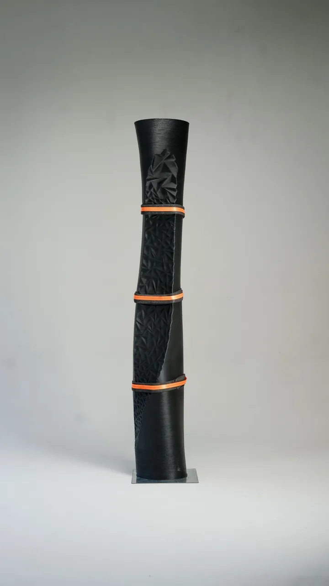

Frammenti
150 MtCirca 150 milioni di tonnellate di plastica negli oceani (dato 2023). La superficie è divisa in 1.500 sfaccettature triangolari: ognuna vale 100.000 tonnellate.About 150 million tonnes of plastic in the oceans (2023 data). The surface is split into 1,500 triangular facets: each one stands for 100,000 tonnes.